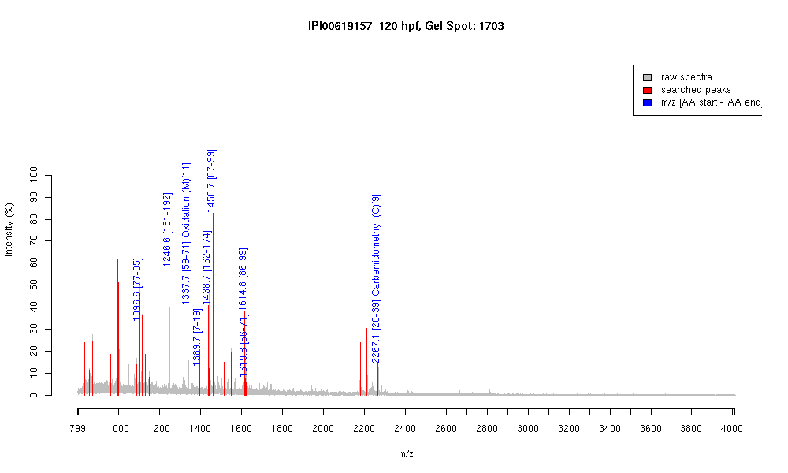

| Name | PREDICTED: similar to Triosephosphateisomerase 1b isoform 5 |
|---|---|
| MW | 25227 |
| PI | 6.12 |
| Mascot Protein Score | 85 |
| Masses (matched / unmatched) | 9 / 35 |

| Peptide | MZ (calc) | MZ (observed) | Error (DA) | Error (PPM) | Start | Stop | Modifications |
|---|---|---|---|---|---|---|---|
| WVILGHSER | 1096.5898 | 1096.5923 | 0.0025 | 2 | 77 | 85 | |
| TNVSEAVANSVR | 1246.6385 | 1246.64 | 0.0015 | 1 | 181 | 192 | |
| GAFTGEISPAMIK | 1337.677 | 1337.6683 | -0.0087 | -7 | 59 | 71 | Oxidation (M)[11] |
| SIEELANTLNSAK | 1389.722 | 1389.7096 | -0.0124 | -9 | 7 | 19 | |
| TASPQQAQEVHDK | 1438.6921 | 1438.6917 | -0.0004 | 0 | 162 | 174 | |
| HVFGESDELIGQK | 1458.7223 | 1458.7168 | -0.0055 | -4 | 87 | 99 | |
| RHVFGESDELIGQK | 1614.8234 | 1614.8245 | 0.0011 | 1 | 86 | 99 | |
| VAKGAFTGEISPAMIK | 1619.8824 | 1619.8339 | -0.0485 | -30 | 56 | 71 | |
| LNPDTEVVCGAPTIYLDYAR | 2267.1013 | 2267.0945 | -0.0068 | -3 | 20 | 39 | Carbamidomethyl (C)[9] |